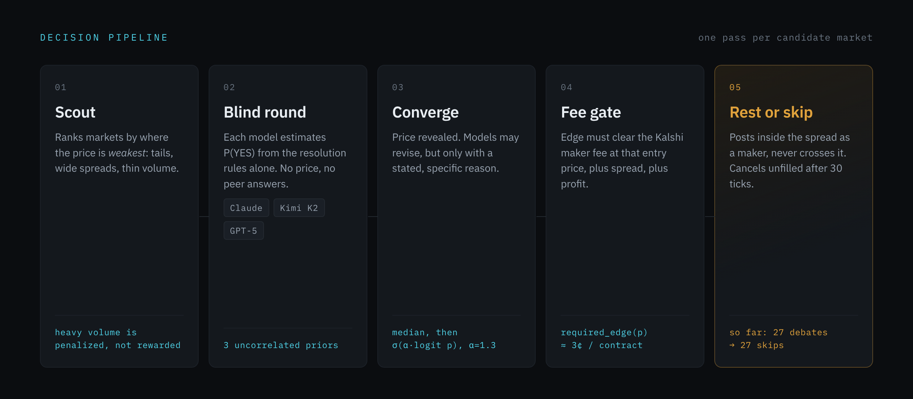
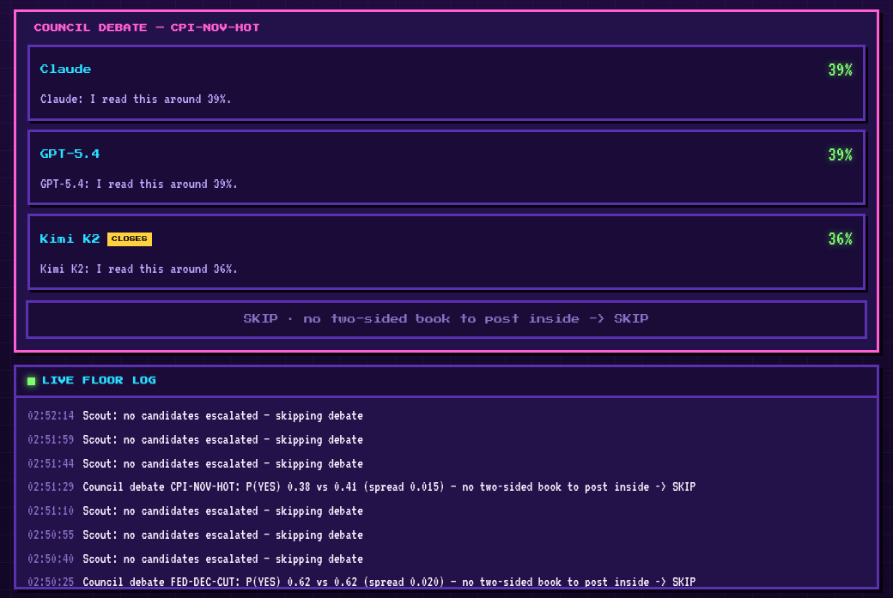

Three language models independently price a Kalshi event contract and argue toward a consensus. Then a fee-aware gate throws out almost every one of them.
Every market the council fully deliberated came back within about a cent of what Kalshi was already charging. Not one cleared the threshold needed to cover fees. That is the system working: the gate exists to refuse exactly these trades.
20 of 27 landed between −0.3¢ and +0.3¢. 1 more was thrown out before pricing, because the three models disagreed too much to call it consensus.
An earlier version traded happily and took a real account from $27.31 to $17.86 over 19 fills. It failed in three ordinary ways, and the rebuild targets each one.
| v1 | Current | |
|---|---|---|
| Prompt | Price given as a strong prior | Round 1 never sees the price |
| Order type | Crossed the spread, taker fees | Rests inside it, maker only |
| Threshold | Flat edge cutoff | Fee computed at entry price |
| Result | 19 fills, net loss | 0 trades, 0 fees paid |

The blind round is the load-bearing change. Each model sees the resolution rules and nothing else, so three independent priors go in rather than one prior and two echoes. Only in round two does the price appear, and a model may revise only with a stated reason.
The fee gate then computes Kalshi's actual maker fee at the exact price it would enter at, adds the spread and a minimum profit, and requires the edge to clear all of it.
Real-money trading raises an error until the council's Brier score beats the market-price baseline across 50 resolved predictions. P&L over a few weeks cannot separate skill from luck; calibration against the price you could have taken instead can.
def arm_execution(self) -> None: """Turn on REAL order placement.""" rep = self.journal.calibration_report(min_n=min_n) if not rep["beats_market"]: raise RuntimeError( f"calibration gate: {rep['n']}/{min_n} resolved predictions, " f"model Brier {rep['brier_model']} vs market " f"{rep['brier_market']} — edge not proven." )
The gate was written before the strategy it gates.
The whole pipeline runs offline against deterministic mock data, exercising the real control flow: real journal writes, real risk checks, real approval gates.
pip install -e ".[dev]" pytest -q # 185 tests, all green uvicorn council.api.app:app --port 8777
